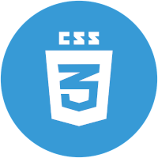

Ferramentas
Resumo de Qualificações
Em especialização na área de programação, com foco em desenvolvimento web, utilizando HTML, CSS e Javascript, com conhecimentos em Git e GitHub e perfil lifelong learning.
Psicóloga, pós-graduada em Administração, com mais de 15 anos de atuação generalista na área de psicologia organizacional, com vivência em implantação de RH em empresas, equipes multidisciplinares, indicadores e análise de dados, liderança de equipes e sistemas de RH.
Formação
Tech
Meninas in Tech
Fly Educação - 07/2022
Iniciante em Programação
Alura - 04/2022
Eu Progr{amo}
Programaria - 02/2022
Formação
Acadêmica
Administração
Póg-graduação - 2013
Fundação Getúlio Vargas
Psicologia
Graduação - 2011
Universidade Estácio de Sá
Formação
Complementar
JavaScript
HTML5 e CSS3
Python
Git e GitHub
Lógica de Programação
Pensamento Computacional
Pacote Office
Inglês (Intermediário)